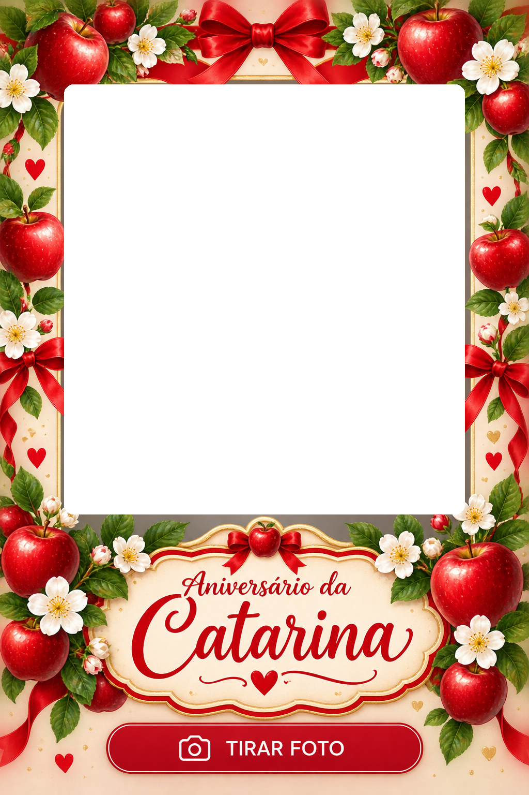

Toque em Abrir câmera para começar.
💌 Deixe uma mensagem para a Catarina
As mensagens são baixadas no aparelho. Este site não as envia automaticamente aos organizadores.
Registre esse momento com a Catarina! A câmera pode ser usada com amigos e familiares. Para fotos em grupo, afaste um pouco o celular.

Toque em Abrir câmera para começar.
As mensagens são baixadas no aparelho. Este site não as envia automaticamente aos organizadores.